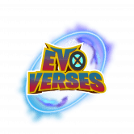 EvoVerses EvoVerses 旨在打造 DeFi 和 GameFi 之间的完美融合。为实现这一目标，我们的团队正在使用虚幻引擎 5 开发一款将精美逼真的图形与有趣的动画卡通相结合的游戏。游戏围绕着
Exiled Racers Exiled Racers 正在以低接触的方式将高保真 NFT 艺术、梦幻联赛体育和游戏带入一个生态系统…… EXR 是 Moonbeam 的第一个原生蓝筹 NFT 艺术收藏——具有奖励低触感、社区驱动的幻
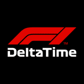 F1 Delta Time F1® Delta Time 是一款基于区块链的游戏，使用不可替代的代币和 REVV ERC20。该游戏以独特汽车、驱动程序和组件的收集和交易为中心——所有这些都以不可替
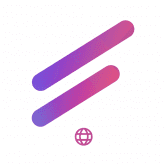 Fabwelt FabWelt 是一个革命性的元界生态系统，专注于通过在高端游戏中利用区块链技术来改善游戏环境。 FABWELT 生态系统的目标是通过游戏内 NFT、Play to Earn 和游戏内 DeFi
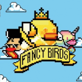 Fancybirds Fancybirds 是我们计划由 FancyDAO 推出的众多游戏中的第一款。 我们游戏中的每个 NFT 都将在我们的小游戏生态系统中发挥作用。 Fancybird 玩家将能够玩、繁殖、出租、 做
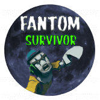 Fantom Survivor Fantom Survivor 是一款跨链、web3、P2E、第三人称僵尸射击游戏，你可以在其中扮演你的幸存者 NFT。它目前在 Fantom Opera 网络和 Avalanche 上，并计划扩展到其他连锁店。扮
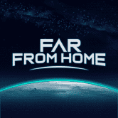 Far From Home Far From Home 是一款即将推出的基于太空的 DeFi 元宇宙游戏，它将挑战玩家在未知的浩瀚宇宙中挖掘、建造和战斗。 Far From Home 世界中一个关键的价值驱动因素是通过各种游
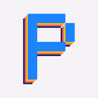 Farm Land by Pixels Pixels Farm Land 是您在虚拟世界中拥有的房屋和农场。 5,000 块独特的地块——拥有一个农场并终生供养！ 并非一切都像元宇宙中看起来的那样 虽然围绕元宇宙有很多工作要
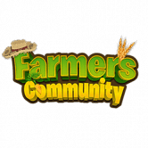 Farmers Community Farmers Community是一个区块链游戏，任何人都可以拥有自己的 一块虚拟的土地可以耕种，并结识新朋友一起耕种。 一个有趣的在线模拟器，让放松的游戏
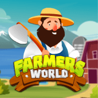 Farmers World Farmers World 是第一个在 NFTs 平台上运行的农场游戏。为自己挑选合适的工具，开发各种资源，购买土地来建造巨大的农场，并享受在农民世界生态系统中工作的农民的迷
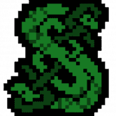 Lokian Monsters 一款集换式卡牌游戏 dapp，在 Solidity 区块链中以 NFT、分享、战斗和繁殖神话生物为特色。 像 Polygon、BSC、Fantom、Avalanche
Colonize Mars 购买补给箱 供应箱是 NFT 包，包含数字交易卡。 卡片以殖民地所需的不同车辆、设备、建筑物和宇航员为特色。 使用卡片赚取玛蒂亚代币 Martia Token 是管理火星经济的游
CommunityGaming.io Community Gaming 是一体化的电子竞技竞赛平台，为主要的行业利益相关者提供尖端的基础设施。 通过其无缝的用户体验以及高度可扩展和高效的区块链支付技术，该平台为
Crane Miners The Crane Miners NFT 10.000 独特的矿工将永远存在！每个人每天可以挖掘 1 分钟，以获得尽可能多的代表 CRANE 代币奖励的石头、黄金或宝石！ 游戏玩法 用户必须选择一名矿工才能
Crazy Defense Heroes Crazy Defense Heroes 手机游戏现已推出全新的“游戏即赚”“每日明星宝箱”活动。 Crazy Defense Heroes 手机游戏是即将推出的使用不可替代代币和 TOWER ERC-20 的塔防区块链游戏的基础。 该游戏
Dawn Of Victory “失败只有一个答案，那就是胜利”（温斯顿·丘吉尔爵士） Les sanglots longs 大提琴 德尔奥托姆 祝福我心 D’une langueur 单调 就在贝多芬第五交响曲的第一个音符和传说中的公式“
Death Punch Death Punch 是一款真正去中心化的游戏。 DeFi 允许释放 Death Punch 的全部潜力，并为公众对新加密项目日益增长的兴趣创建一个自适应平台。如今，市场上的大多数游戏都仅在
Decentral Ludo Ludo 是一款适合 2-4 人的战略棋盘游戏，每个玩家都获得四个代币或棋子。赢得游戏获得奖池奖励并为每一个棋子移动铸造 TFN 有趣的鸟 Fun Bird 是一款受 Flappy Bird 启发的游戏
Decentraland Decentraland 市场允许用户浏览、购买、出售和管理 LAND 代币。 Marketplace 是一个建立在以太坊上的完全去中心化、零费用的应用程序。 测试你的想象力极限 使用简单的 Builder 工具创建场
Decentribes Decentribes 是一款即将推出的 Play to Earn Massive Multiplayer Online 游戏，玩家在区块链上拥有土地和物品。 游戏将在浏览器中实时进行，每个玩家都可以创建一个头像并访问任何一块土地 - 单
Defina Defina Finance 是一款在线区块链游戏，它利用并结合了去中心化金融 (Defi) 和 NFT，让玩家可以拥有自己的游戏资产并通过游戏和训练将其货币化。 Defina 的愿景是将区块链带
DefiPanzer Defi Panzer 是基于区块链的终极战略射击游戏大师，基于 Binance Smart 链构建的装甲战争艺术，专注于游戏化并推广游戏赚钱概念。 Defi Panzer 是基于区块链的战略坦克战游戏，建立
Battle Derps Battle Derps 是一款自上而下的多人 PVP 射击游戏，适用于桌面和移动 metamask 浏览器。 第一季已经开始，将在大约 1 个月后结束。 目前，我们的目标是生存并尽可能多地杀死敌
BattleBlockz BattleBlockz 是 Zexie Studios 打造的第一款 3D 竞技 WAX 游戏。区块链已被一个名为 The Ravenous 的派系感染。你会选择加入他们的世界统治目标，还是与 The Collective 联手拯救我们所钦佩的 The Wax 区块链
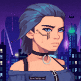 CipherShooters 领导者将组成一个小队，准备与利用 CipherCity 的邪恶公司霸主作战。随着时间的推移，玩家可以获得代币和武器，让他们能够加强他们的小队并将城市从压迫者手中夺
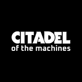 Citadel Of The Machines 一个不同于其他物理沙盒 IDE 的游戏世界 一款 3D 冒险解谜游戏。 可玩的 NFT 角色。 一个值得探索的世界。 永恒的过去。 雷击使飞船的计算机终于苏醒。 唯一能发挥作
CubeSmasher 怎么玩 粉碎 100 个立方体以提交 1 个挖矿权益（例如：200 个立方体 = 2 个权益） 每小时有 1000 CUBE 奖励根据玩家的挖矿权益按比例分配给玩家 访问 cube.money 提取您的 CUBE 代
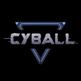 CyBall CyBall 是一款以未来主义足球为主题（美国：足球）、基于 NFT 的游戏，用户可以在其中收集和组建 CyBloc 团队并在线对抗其他团队，或者在 CyBall 的生态系统中交易和指导新
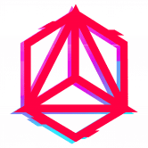 Cyber Arena CYBER ARENA 是一款 PVP 战斗卡牌游戏，其游戏玩法灵感来自炉石传说和万智牌 - 但有一些独特的曲折。玩家从 AnRKey X 宇宙中的角色构建他们的游戏卡牌 (NFT)，并与其
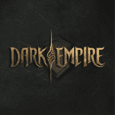 Dark Empire Dark Empire 是一款基于 Polygon 的在线多人区块链游戏，具有 PVP、PVE、团队对战游戏模式。 🕹关于游戏🕹 ✔️多人区块链游戏 ✔️ 黑暗英雄和黑暗野兽 ✔️ 单人、团